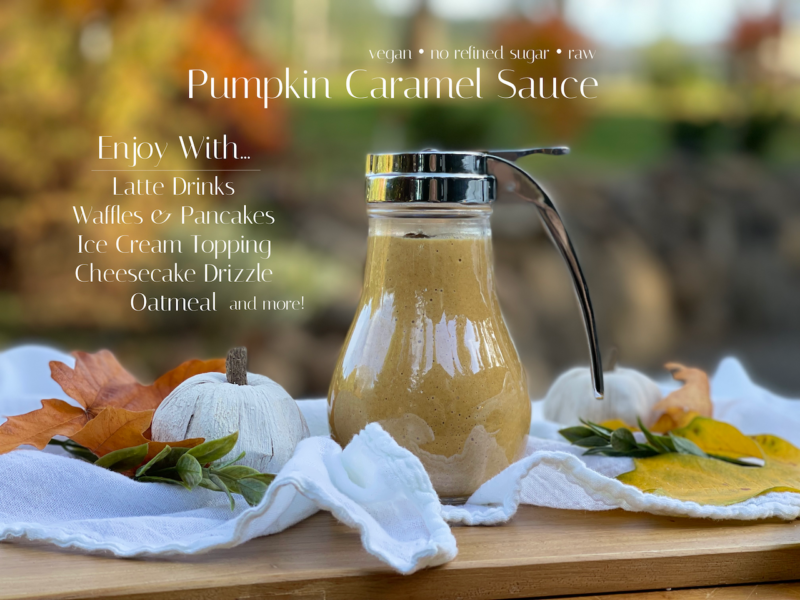
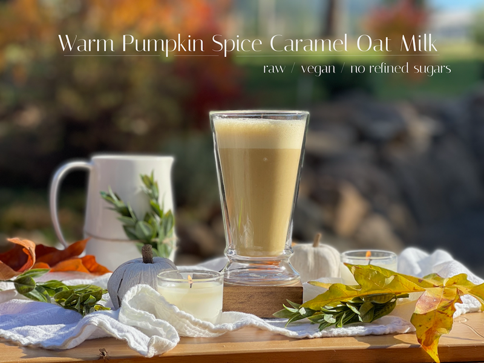
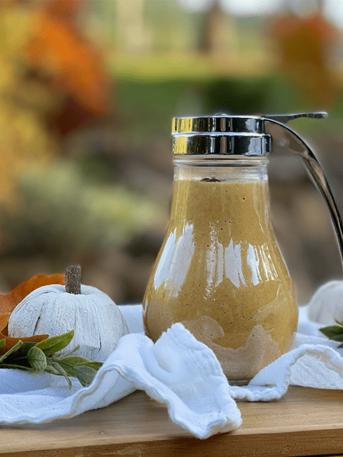
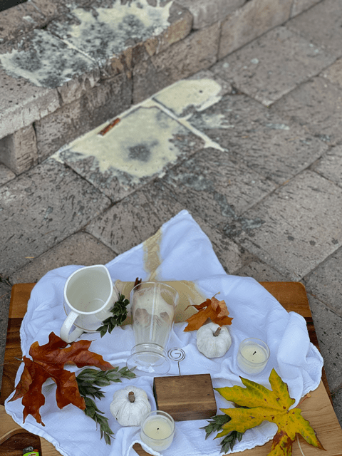

Pumpkin Spice Caramel Sauce + 2 Drink Recipes
Ready to satiate your fall cravings? This Pumpkin Caramel Sauce can be enjoyed in so many ways. You can drizzle the sauce over waffles or pancakes, use it as an ice cream topping, add to ciders or smoothies… just to name a few fall inspirational ideas. Oh, and how about adding it to warmed plant-based milk to make pumpkin spice drinks for kids without any caffeine? Love it!

Warm Pumpkin Spice Caramel Oat Milk (kid-friendly, caffeine-free)
- Add 1/4 cup of sauce to 8 oz of plant-based milk. You can use any type of milk, but I recommend one that is on the thicker side for the ultimate in a creamy, cozy experience. Coconut milk or oat milk are my favorites because they add a creamy, decadent flavor to your homemade pumpkin spice coffee-free latte. You can warm this on the stovetop, or in a blender, in under 5 minutes. I used the warm setting on the Vitamix blender, which created a nice warm drink with foam on top. Become your own barista!

Ingredient Run-Down
Almond Butter
- Almond butter adds a wonderful creamy mouthfeel as well as a healthy dose of fat.
- Fats give food and drink products particular sensory characteristics because they can act as texturizers, lubricants, and aroma carriers.
- Be sure to select an almond butter that contains only one ingredient; almonds. Read those labels or make your (own).
- You can use other nut or seed butters, but really pay attention to the flavor profile that it will impart.
Medjool Dates
- Dates add natural sweetness and a heavenly caramel-like taste.
- Be sure to remove the pits and crowns.
- If they are tough and dry, soak them in warm water until soft. Dates are high in iron, so will give you the energy kick you need to get through whatever type of day you might be having.
- If you love to learn where your food comes from, check out this (post) that I wrote regarding how these dates are grown, harvested, etc.
Blackstrap Molasses
- Molasses adds a wonderful level of depth and richness.
- Molasses is a good source of iron, selenium, and copper. Granted, we are using a small amount, but every little bit adds up.
- Blackstrap molasses is a byproduct of the sugar-refining process. The two are separated–sugar and molasses–and while sugar has zero nutritional value, molasses is rich in iron, magnesium, calcium, vitamin B6, potassium, and selenium.
Pumpkin Puree
- Be sure to use 100% pure pumpkin puree. Don’t confuse it with pumpkin pie filling which has added spices and sugar.
- If you wish to make your own raw pumpkin puree, click (here).
Pumpkin Pie Spice
- Pumpkin pie spice is usually made up of a combination of cinnamon, nutmeg, cloves, allspice, and ginger. If you don’t have any on hand, you can make your own. Check out my recipe (here).
- Feel free to adjust the measurement of this spice blend.

Recipe for the drink in the photo above; 1 cup oat milk, 1/4 cup cold-pressed coffee, and 1/4 cup of the Pumpkin Spice Caramel Sauce. Froth or blend until warm.
This recipe is super quick and easy to make. Give me a blender and 10 minutes of your time and I will give you a delicious, more nutritious fall treat! I hope you enjoy this recipe. Please leave a comment below on how you plan to use it. blessings, amie sue

Ingredients:
Yields – 2.5 cups
- 3/4 cup water
- 1/2 cup raw almond butter
- 1/2 cup pumpkin puree
- 1/2 cup maple syrup
- 1/2 cup PACKED, moist Medjool dates
- 2 tsp blackstrap molasses
- 2 tsp vanilla extract
- 2 tsp pumpkin pie spice
- 1/8 tsp Himalayan pink salt
Preparation:
- Place the water, almond butter, pumpkin puree, maple syrup, dates, molasses, vanilla, pumpkin spice, and salt in a high-powered blender and process until smooth.
- For reference, blend until the brown flex pieces from the dates are fully broken down.
- Store in the fridge in a glass container. Good for approximately 2 weeks.
Want to see a little behind-the-scenes action? Since we have been experiencing some lovely, warm fall days, I felt inspired to take my photo session outside. All was going well until I decided to carry the whole kit and kaboodle at once. While walking to the door, the glass started to wobble, but by the time I stopped walking, it fell over and all the contents spilled on the ground. Thankfully, I was able to stop the glass from going overboard as well. Oy vey. The glamorous side of running a recipe site!

© AmieSue.com